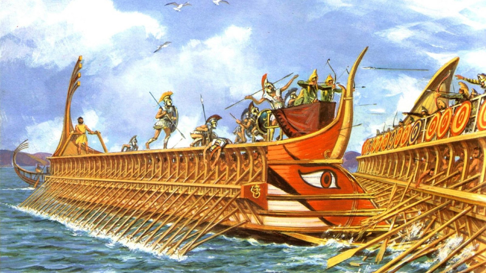
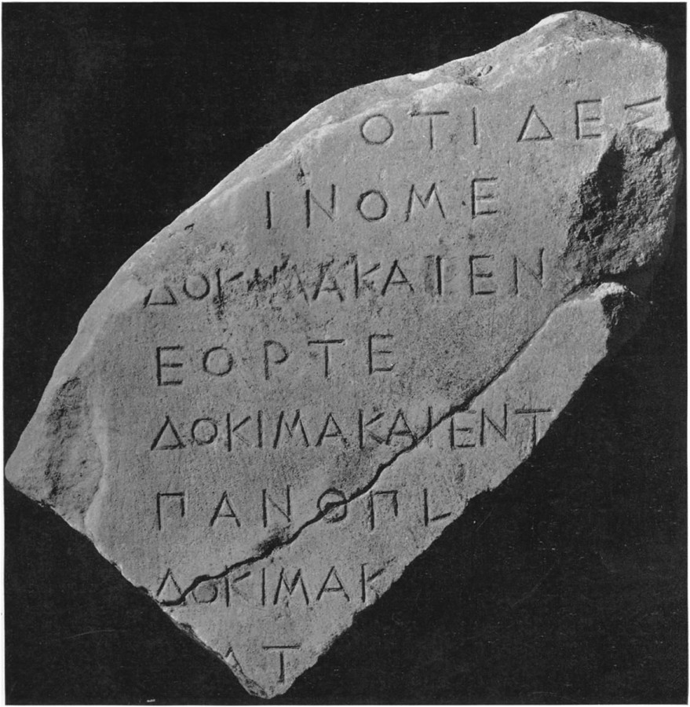
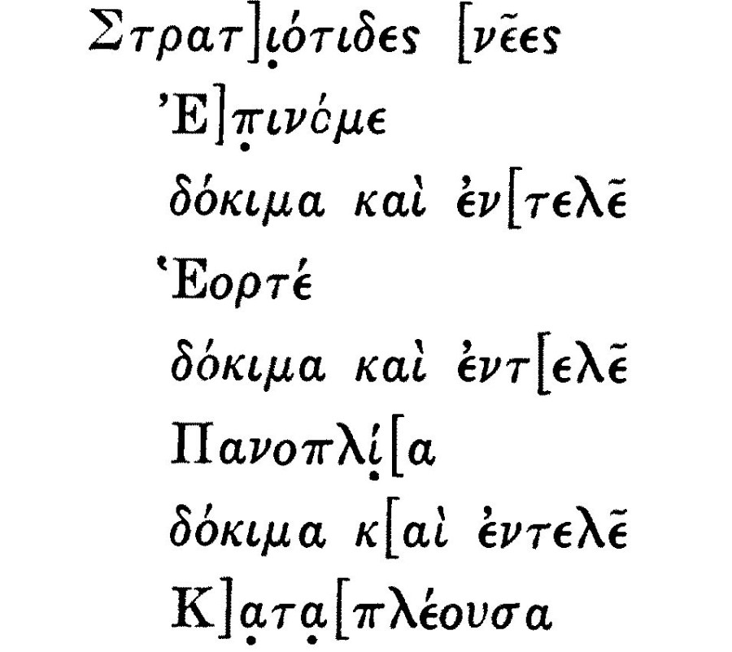

После того, как мы немного отдохнули, рассматривая картинки с проемболоном, вновь обратимся к головоломкам стратегем Полиэна. Посмотрим на этот раз, как Тарн объясняет свою трактовку действий кормчего Каллиада, которого настигает более быстроходный корабль противника.
That is to say, as the boat behind made her shot, Calliades put on his steerage ; the ram missed his stern and slid past it toward, pointing at, his sternmost oars, while the cathead struck his stern, and of course too high to do much harm ; this checked the pursuer's way for the moment, and while she was straightening herself for another shot Calliades would gain a little on his new tack. The oars the ram pointed at were the first or endmost thranite oars. On the accepted theory they would have been the first or endmost oars of all three classes. The thranite oars therefore were in a group at the stern.
То есть, когда догоняющий корабль делал рывок, Каллиад начинал работать рулевым веслом; таран преследователя, миновав его корму, проскальзывал мимо нее в направлении к ближайшим к корме веслам, в то время как его крамбол (эпотид – g,_g.) ударял по корме, и, конечно же, слишком высоко, чтобы причинить большой вред; это на какое-то мгновение тормозило движение преследователя, и пока он готовился к следующему рывку, Каллиад немного отрывался вперед на новом отрезке гонки. Весла, на которые был нацелен таран преследователя, были первыми или самыми ближними к корме веслами транитов. По «общепринятой» же теории это должны были быть первые или конечные весла всех трех классов. Отсюда вывод: весла транитов входили в группу весел, примыкающую к корме.
Tarn, (1905), The Greek Warship, p.140
Еще раз разъясним точку зрения Тарна: так как Полиэн в своей стратегеме говорит, что (при атаке с кормы) угрозе тарана со стороны преследователя подвергаются лишь весла транитов, то это может означать лишь одно: вся группа весел в корме принадлежит транитам и только транитам.

Но мы вновь безоговорочно не займем позицию в поддержку уважаемого ученого. Ведь имеется еще одна возможность, когда размещение гребцов соответствует условиям Полиэна, и вместе с тем не является вариантом, на котором настаивает Тарн. Для выявления этой возможности вновь обратимся к надписям.
Пользуясь поводом, скажем несколько слов о том, что собой представляли «афинские военно-морские надписи» в классический период истории Греции.
Незабвенные Брокгауз и Ефрон так определяли дисциплину, занимающуюся надписями
Надписи (Έπιγραφαί, Inscriptiones), вернее, «написи» — тексты, начертанные на твердом материале (камне, металле, дереве и т. п.). Дошедшие до нас Н. древних времен служат историческим источником первостепенного значения, иногда более важным, чем литературные произведения, так как они современны событиям и нередко составлялись самими деятелями. Многие из них — подлинные акты; другие освещают различные стороны современной им жизни… Отдел науки, занимающийся надписями — эпиграфика — достиг большого развития, благодаря многочисленным находкам.
Современная Википедия дает более сжатое определение эпиграфики:
Эпигра́фика (от др.-греч. ἐπιγραφή — надпись) — вспомогательная историческая дисциплина (прикладная историческая и филологическая дисциплина), изучающая содержание и формы надписей на твёрдых материалах (камне, керамике, металле и пр.) и классифицирующая их в соответствии с их временным и культурным контекстом
и, более конкретно, греческой эпиграфики
Греческая эпиграфика (греч. ἐπὶ γράφειν; лат. epigraphia graeca) — вспомогательная историко-филологическая и археологическая дисциплина, занимающаяся изучением, каталогизацией и переводом античных греческих высеченных надписей.
Нам предстоит заняться значительно более узким отделом упомянутой выше науки, а именно военно-морскими надписями. Впервые они были глубоко изучены в труде немецкого историка-эллиниста, положившего начало современной эпиграфике, Августа Бёка (Philipp August Böckh, 1785-1867) Материалы о морском деле в Аттическом государстве (Urkunden über das Seewesen des Attischen Staates, 1840). Эта книга вышла как третий том – приложение к сочинению Бёка «Государственное устройство афинян». К этой работе мы обратимся еще не раз, но пока ограничимся, учитывая рассматриваемую сейчас проблему, веслами триер.
Работа А. Бёка представляет собой публикацию 18 надписей, так называемых «Аттических морских известий», половина из которых – это инвентарные списки кораблей, а остальные касаются мероприятий по оснащению кораблей.
Большинство основных положений Бёка были подтверждены позднейшими исследователями, привлекавшими также новый литературный и эпиграфический материал.
Для понимания того, почему греческие военно-морские надписи имеют такое значение для истории античного флота, необходимо принять во внимание два обстоятельства.
1. Военный корабль, в частности, триера, являлся собственностью государства. Его строительство и оснащение велось под контролем Буле – совета, который был рабочим органом народного собрания, экклесии. Члены Буле определяли технические характеристики будущего корабля, наблюдали за сооружением для его строительства крытых эллингов, контролировали ход постройки.
2. В Афинах не было постоянного профессионального корпуса для формирования экипажей кораблей, в том числе и командным составом. Командир назначался в рамках триерархии, одной из самых тяжелых чрезвычайных афинских литургий. (Литургия – общественная повинность состоятельных граждан Афин. Литургии делились на две категории – регулярные и чрезвычайные). Триерархия состояла в обязанности снарядить построенный государством военный корабль, в продолжение всей кампании содержать его в боевой готовности и командовать кораблем. По истечении года триерарх должен был возвратить корабль в исправном виде и дать отчет специально назначаемым для этой цели чиновникам – эпимелетам военно-морских арсеналов. Триера вверялась триерарху в идеальном состоянии; по возвращении из кампании триерарх мог быть привлечен к ответственности за любой ущерб, причиненный судну, если он не мог доказать, что не несет ответственности за этот ущерб.
Мы видим, таким образом, что подобная система требовала самого тщетельного учета состояния триеры при передаче ее триерарху и возвращении корабля, а также скрупулезной инвентаризации всего оборудования корабля, которая выглядела как обширный реестр, выбитый на мраморных досках под личным контролем эпимелетов. Этот реестр отражал не только количество, но и состояние различных предметов оснащения корабля. Реестр назывался diagrammata διάγραμματα (регистры, списки). О них писал Демосфен в своей речи о симмориях (354 г. до н.э.) (D. 14.21):
τὸν αὐτὸν δὲ τρόπον καὶ τὰ νῦν ὀφειλόμεν᾽, ὦ ἄνδρες Ἀθηναῖοι, τῶν σκευῶν ἐπὶ τὰς τριήρεις τιμήσαντας ἅπαντ᾽ ἐκ τοῦ διαγράμματος νεῖμαι κελεύω μέρη εἴκοσιν
Таким же точно образом и оснастку для триер, оставшуюся сейчас, граждане афинские, невыполненной, я предлагаю всю подвергнуть оценке по расчетной ведомости и распределить на двадцать частей…
Демосфен. Речи. В трех томах. Т.3 – 1995, (пер. С.И. Радциг, 1954)
Вот эти регистры, которые дошли до наших дней, мы и рассматриваем сейчас в качестве одного из важнейших источников по истории афинских триер.
«Военно-морские надписи» восходят к V веку до н.э., от него до нас дошли три фрагмента таких надписей. От IV века сохранилось не менее 28 фрагментов. Первые записи носят очень лаконичный характер. Вот как, например, выглядит фрагмент надписи V века до н.э.,, найденный в Пирее

Приведем реконструкцию надписи на нем

Таким образом, мы узнаём, что оборудование на трех триерах, названия которых «Эпиноме», «Эорте» и «Паноплиа», δόκιμος καΐ εντελής. («в приемлемом состоянии и укомплектовано») (для неудовлетворительного состояния оборудования, препятствующего его дальнейшему использованию по назначению, эксперты использовали термин αδόκιμος «не соответствует»).
Такие же оценки состояния триер эпимелеты продолжали делать и в IV веке. Первый из дошедших фрагментов этого века (IG II 2 1604) относится к 377/6 г. и выгравирован на мраморной доске размером 1,13х0,44 м, из которой лишь правая половина более-менее читабельна. Надпись касается 106 триер. На ней рассматриваются различные категории весел: транитов, зигитов и таламитов. Однако, как и в надписях предыдущего века, отмечаются исключительно отсутствующие (ἐνδεΐ) или неисправные (αδόκιμοι) весла. Все остальные предметы оснащения подразумеваются имеющимися в наличии. В этой надписи ни разу не упоминается общее количество весел различных категорий, положенных по регламенту. Непонятна и ситуация с запасными веслами. В надписи они также не упоминаются. Впервые о запасных веслах (περίνεω) говорится в надписи IG II2 1605 (после 377/6 г.), хотя об их общем количестве не сказано ни слова. В этой же надписи впервые указаны причины, по которым весла считаются несоответствующими требованиям. Например, мы читаем, что 21 весел транитов – [άδ]όκι. θριπή. , что является сокращением для αδόκιμοι θριπήδεστοι (не соответствуют, так как повреждены червями).
Значительно больше информации о веслах триер мы получаем из надписей, датированных 374/3 и 373/2 годами (IG II2 1606 и 1607). Мы можем выяснить из этих надписей число исправных весел каждой категории и число неисправных, что после сложения дает общее число весел каждой категории. Например, пользуясь этим методом, для триеры из третьей строки надписи (название не читается) мы получаем 59+1=60 весел транитов, 49+5= 54 – зигитов, 50+4=54 – таламитов, всего 168 весел на триеру.
Впервые именно в этих надписях упоминаются размеры весел. Именно приведенные в них данные были положены практически во все оценки этого параметра в работах ведущих специалистов в этой области. Вот несколько цитат:
1881 : A. Cartault (в отношении резервных весел) : «Это единственные надписи, в которых приводятся данные о размерах. Их длина 9 ½ локтей, т.е. 14 l/4 футов = 4,393 м »30.
1895: C. Torr: «Длина этих (резервных) весел на афинских триерах равнялась 9 или 9 ½ локтям».
1941 : J. S. Morrison : « Число резервных весел обычно равно 30 и их длина всегда составляла 9 или 9 ½ локтей».
1968 : J. Taillardat: «Надписи дают длину только запасных весел (которые, очевидно, имели ту же длину, что и обычные весла); иногда они составляли 9 локтей (около 4,17 м), иногда 9 ½ локтей (около 4,40 м).
1968 : J. S. Morrison: «Длина запасных (perinô) весел дана: девять локтей или девять с половиной локтей.»
1971 : L. Casson : « Запасные весла (perineo) на триремах имели только два размера. . . ».
1978 : J.S. Morrison: «Надписи IG II2 1606 и 1607, которые различают весла по длине (9 или 9 ½ локтей) предполагают, что на триере были весла только двух размеров в длину и не представляют никаких доказательств, что это не так».
1986 : J. S. Morrison : « Военно-морские реестры дают существенную информацию, сообщая число запасных весел на триерах и их длину. А именно, тридцать весел, по 9 локтей (3,99 м) и 9 ½ локтей (4,2 м).
1995 : J. L. Shear: «Длина рукояток весел варьировалась в пределах половины локтя, в зависимости от положения на корабле; более длинные весла находились в центральной части, в то время как более короткие – в носу и корме. Таким образом, длина весел составляла либо девять, либо девять с половиной локтей».
Запись Моррисона 1986 г. содержит ошибку, которая стала роковой при реконструкции афинской триеры Olympias. Моррисон принимает значение локтя, который использовался в надписях, равным 444 мм. Это значение, в приложении его к расстоянию между уключинами, которое равнялось двум локтям, давало величину 0,888 м. Практические испытания Olympias показали, что это значение явно недостаточно. Сам Моррисон признал свою ошибку в статье 1991 года:
It should be said in conclusion that the stimulus to re-examine the validity of the ‘Attic’ cubit in 4th-century naval contexts sprang mainly and directly from the experimental evidence obtained from the recent measured sea trials of Olympias …, which have demonstrated… that the room of 0.888 m is insufficient to allow an oar-crew to develop its full potential…
Нужно сказать в заключение, что недавние испытания Olympias стали стимулом для пересмотра значения «аттического» локтя для военно-морских измерений в четвертом веке; испытания продемонстрировали, что интерскалмиум 0,888 м недостаточен для того, чтобы дать возможность гребцам использовать полностью свой потенциал.
MORRISON, JOHN (1991) Ancient Greek measures of length in nautical contexts
Моррисон пришел к выводу, что в военно-морских вопросах значение локтя составляло от 0,487 до 0,495 м.
Что касается двух размеров весел, о которых сказано в последней цитате Шира (9 и 9 ½ локтей), то некоторые исследователи считают, что ими не исчерпываются все размеры и что существовал еще третий, «стандартный» размер, который не писали по указанной выше причине: в записях эпимелетов указывались только лишь отклонения от стандарта.
После этого краткого обзора военно-морских надписей вернемся к вопросу, который возник при разборе стратегемы Полиэна: почему при атаке триеры с кормы угрозе тарана со стороны преследователя подвергаются лишь весла транитов?
Чтобы найти альтернативный вариант ответа на этот вопрос приведем среднее число весел на триерах по категориям, полученное из военно-морских надписей: весла транитов – 62 шт., весла зигитов – 54, весла таламитов – 54, запасные весла – 30. При размещении весел в три яруса (не будем пока вдаваться в детали такого размещения) мы получаем, что в ряду транитов на 8 весел больше, чем у гребцов двух других категорий (на приведенной в начале поста картинке этот факт не нашел отражения). А это может означать, что по крайней мере по четыре весла в носу и корме будут только веслами транитов (видимо, из-за сокращения пространства в оконечностях триеры там можно было разместить только один ряд гребцов), и при ударе с кормы, например, именно весла этой категории будут подвергаться угрозе.
Продолжим в следующий раз.